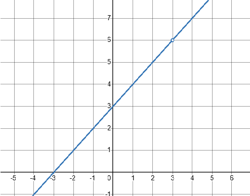
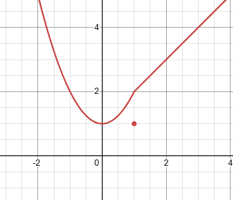
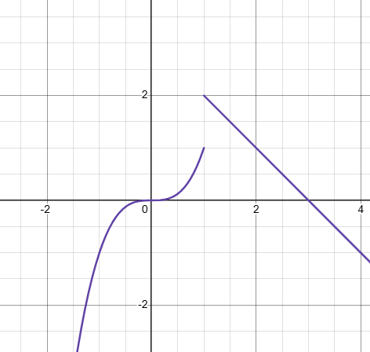

Interactive Lesson Walkthrough & Categorized Practice Hub
Type 1: Removable (Point) Discontinuity
Definition: A discontinuity where the limit limx→a f(x) exists, but either (Scenario A) the function value f(a) is completely undefined (a missing hole), or (Scenario B) f(a) is defined elsewhere (a displaced point).
Scenario A: Hole Where f(a) is Undefined
Function:
x² - 4x - 2
at point of interest x = 2
Step 1: Limit and Function Value Analysis
• Factor the numerator:
(x - 2)(x + 2)x - 2
= x + 2 (for x ≠ 2).
• Evaluate the limit:
limx→2
(x + 2) = 4
• Function value: f(2) results in division by zero (0/0), meaning f(2) is undefined.
Step 2: Conclusion
Because the limit exists (4) but f(2) is undefined, the graph has a single missing hole at (2, 4). This is a Removable Discontinuity.

Visual representation showing a missing point/hole on the graph.
Scenario B: Displaced Point (Hole with New Position)
Step 2: Conclusion
Since the left-hand limit (2) equals the right-hand limit (2), the overall limit exists: limx→1 f(x) = 2.
However, the function value is f(1) = 1. Because limx→1 f(x) ≠ f(1), this is a Removable Discontinuity with a displaced point!

Visual representation showing the hole at (1, 2) and the displaced point at (1, 1).
Type 2: Jump Discontinuity
Definition: The left-hand limit and right-hand limit both exist and are finite, but they are not equal (limx→a⁻ f(x) ≠ limx→a⁺ f(x)).
Step 2: Conclusion
The left-hand limit is 1 and the right-hand limit is 2. Since 1 ≠ 2, the two-sided limit does not exist due to a finite break.
Because both one-sided limits are finite but unequal, this is a Jump Discontinuity!

Visual representation showing a finite break at x = 1.
Type 3: Infinite Discontinuity
Definition: At least one of the one-sided limits approaches infinity (∞ or -∞), creating a vertical asymptote.
Walkthrough Example
Function:
f(x) =
3(x - 4)²
at point of interest x = 4
Step 1: Analyze Asymptotic Behavior
As x → 4, the denominator (x - 4)² approaches 0 through strictly positive numbers.
• Limit expression:
limx→4
3(x - 4)²
= ∞
Step 2: Conclusion
Because the limit grows without bound toward infinity, this represents an Infinite Discontinuity with a vertical asymptote at x = 4.